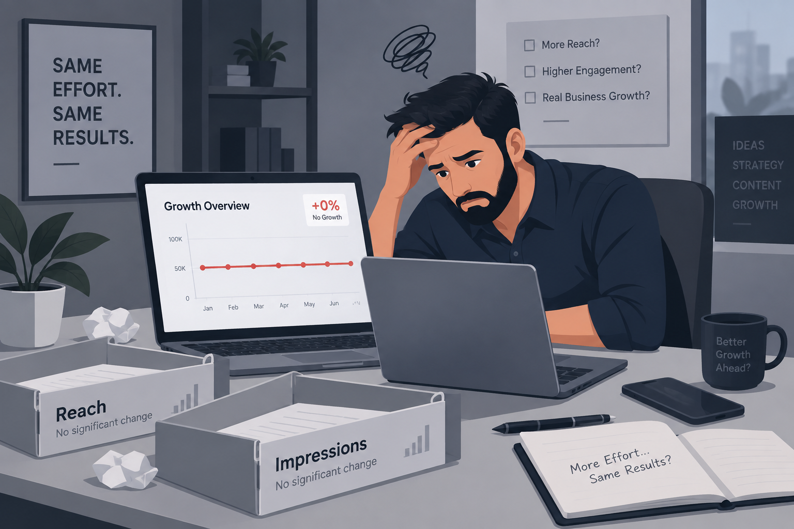
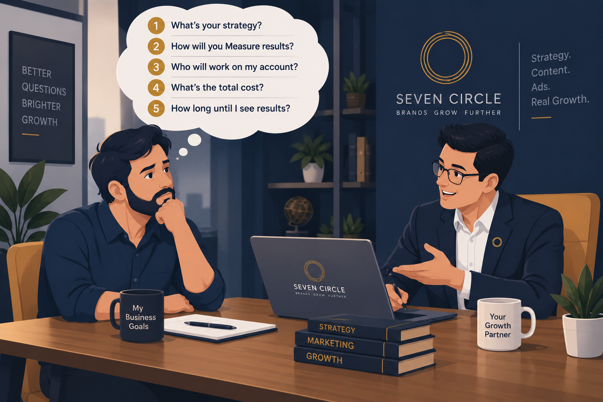
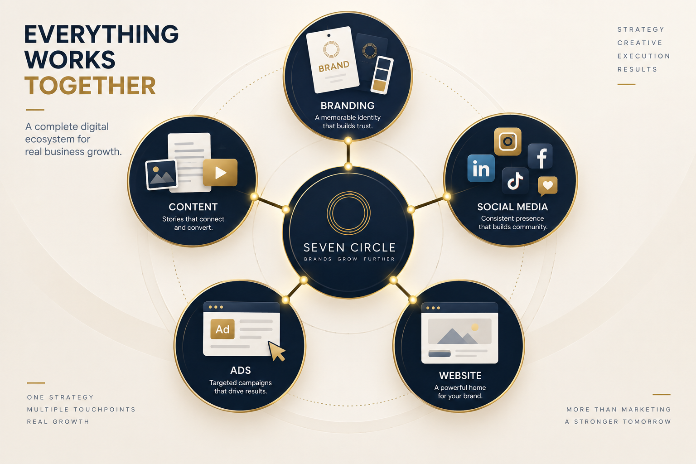
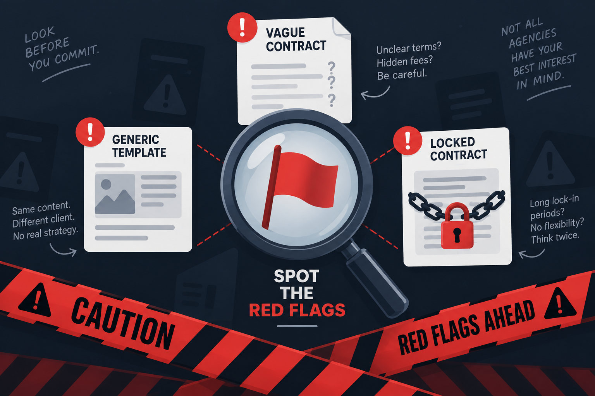
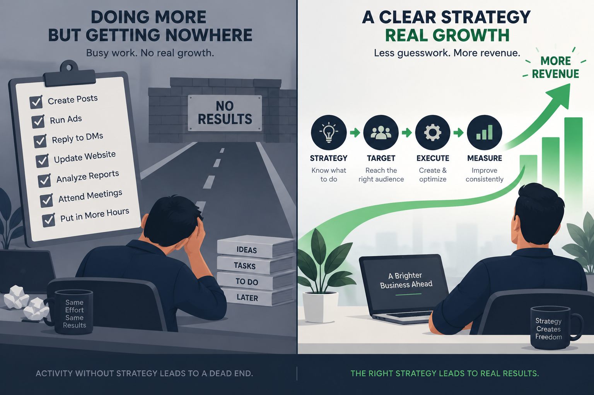

You did everything right. You researched, had the discovery call, signed the contract and paid the retainer. You were finally handing marketing off to “the professionals” so you could focus on running your business.
Three months later, you have a folder full of pretty graphics, monthly reports full of “reach” and “impressions” and a bank account that does not look any different.
If you are wondering, “Was it me? Did I do something wrong?” — stop. In most cases, it was not you. It was a broken agency relationship, and it is far more common than business owners realize.
You paid. They posted. Nothing happened. Here is why.
Marketing is not a task list.
It is a growth system.
Posting daily, launching ads and sending reports can look like progress while the business stays in the same place. The goal is not the amount of activity an agency completes. The goal is what changes for your business because of that activity.
Leads, sales, qualified conversations and revenue are the outcomes that matter. When a monthly report is full of tasks but light on business results, the work may be busy without being useful.

Six common reasons agencies
fail to deliver results.
1. They sold you activity, not outcomes
Many agencies measure success by what they did — the number of posts, ads launched or hours worked — rather than what happened to your business as a result.
The fix: Define the business outcome first, then decide which work can move that outcome.
2. There was no real strategy before the work started
A rushed onboarding that jumps straight into posting or ad launches is building on sand. Without understanding your audience, offer, funnel and competitors, “good content” has nowhere useful to go.
The fix: Expect an audit and a clear strategic plan before execution begins.

3. They treated every client the same way
Cookie-cutter templates and copy-paste calendars help an agency scale, but they rarely help your business stand out. Your industry, offer, audience and buying journey should shape the work.
The fix: Look for a point of view that is specific to your business, not just a package with your logo added.
4. Marketing was disconnected from the rest of the business
An agency that manages ads or social media without looking at your website, offer, sales process and customer follow-up is optimizing one piece of a much larger machine.
The fix: Connect the touchpoints so campaigns lead to an experience that can actually convert.

5. Reporting was vague, delayed or missing
If you had to chase your agency for updates, or the reports focused on metrics that did not connect to revenue, you never had the visibility needed to know if the work was paying off.
The fix: Agree on a small set of useful measures and a regular rhythm for reviewing what they mean.
6. There was no real communication or accountability
Slow responses, disappearing account managers and a general feeling that you were “just another client” point to a relationship built around retaining your payment, not your growth.
The fix: Establish one accountable point of contact, clear check-ins and honest decisions when something is not working.
Spot the red flags
before the contract.
The easiest time to evaluate an agency is before it has your retainer. Pay attention when you hear:
- Vague promises“We’ll grow your brand” without specifics about how, for whom or by when.
- No defined KPIsSuccess metrics are missing or will be decided after the work begins.
- No proofThey are reluctant to show relevant results, case studies or the thinking behind them.
- Long lock-in periodsYou are pushed toward a long contract before the relationship has earned trust.
- One-size-fits-all packagesThe offer stays the same regardless of your industry, goals or customer journey.
- Unclear ownershipYou do not know who will actually do the work or who is accountable for decisions.

Eight questions to ask
before you hire again.
A trustworthy agency should answer these clearly, specifically and without defensiveness:
- What specific outcome will you be accountable for?Separate business results from the tasks you will complete.
- How will you measure success?Ask how often you will see the data and what decisions it will inform.
- Can you show a real result in my industry?Look for relevant thinking, not just an impressive logo list.
- Who exactly will work on my account?Understand their experience and how much senior attention you can expect.
- What happens in the first 30 days?There should be discovery and strategy before a rush to publish.
- What changes if something is not working?Good partners have a testing and learning process.
- Do you look at the whole customer journey?Ask whether they connect social, ads, website, offer and follow-up.
- What does a bad-fit client look like for you?An honest agency can explain where it cannot create value.
Real results come from
connected decisions.
The businesses that get burned most often are not always the ones that hired a “bad” agency. They are the ones that hired someone to do one isolated task — ads, social posts or a website — without anyone looking at how the pieces connect.
Branding, content, ads, website and follow-up should work toward the same goal. Otherwise, five disconnected vendors can each optimize their own small piece while the customer experiences one confusing business.

Clarity first.
Execution with accountability.
We built Seven Circle because we saw good businesses waste budgets and lose trust in marketing. Our approach is designed to make the relationship clearer from the beginning.
- Strategy before executionEvery engagement starts with a real look at your business, audience and funnel — not a template.
- One connected systemBranding, content, social media, copywriting, paid advertising and website development support the same goals.
- Transparent reportingClear visibility into what is moving the business forward, not just what was “done” that month.
- Real accountabilityA defined point of contact, useful check-ins and honesty when something needs to change.
We would rather earn your trust with clarity upfront than win a contract with a promise we cannot back up.
Questions worth
asking first.
How long should I give an agency before expecting results?
It depends on the service. Paid ads can show early signals within weeks, while SEO, branding and content-led growth often take three to six months to show strong compounding results. The timeline should be explained upfront.
Is it normal not to see results in the first month?
Sometimes, especially for organic strategies. The bigger warning sign is a lack of clear strategy or reporting — not simply the absence of instant results.
Should I switch agencies immediately if results are slow?
Not necessarily. First ask for a clear breakdown of the strategy, current data and next steps. If the agency cannot provide specific answers, that is a stronger signal to move on than the timeline alone.
What is the biggest sign an agency is working in my best interest?
Proactive communication: they tell you what is working, what is not and what they are changing without you having to chase them.
- Outcomes matter more than activity.
- Strategy should come before execution.
- Clarity and accountability protect the relationship.
You do not need more marketing noise. You need a partner who can connect the work to the growth you actually want.
Book a free strategy call ↗